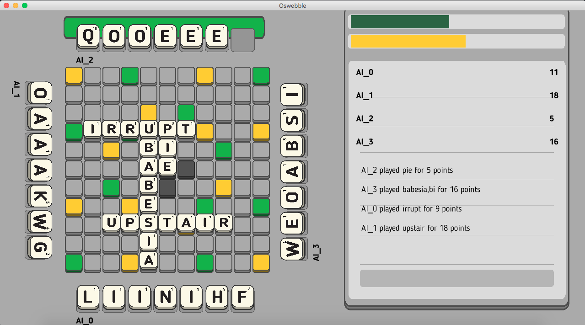

As Blue team lead I was responsible for:
As Blue Engine team lead:
See the repository
Oswebble
This application is the result of a class project involving 44 members. The class was structured to emulate a startup, designing a word tabletop game for a workstation in the science center that could be accessed by a mobile device or laptop. The class used an Agile Development framework to complete this task.
Students were split into the following teams:
- Requirements
- Usability
- Quality Assurance
- Database (Red or Blue)
- Engine (Red or Blue)
- Graphical User Interface (Red or Blue)
Where Requirements, Usability, and Quaity Assurance were part of the overarching team, and Red and Blue were competing to create the final product. I was lead of Blue Engine and team lead overall for the Blue Team.
- Planning weekly sprints and milestones
- Collaborating with overarching teams to ensure requirements were met
- Facilitating communication among GUI, Engine, and Database teams
- Preparing and delivering daily Scrums
- Facilitating communication among team members
- Assigning tasks to individuals to meet sprint goals